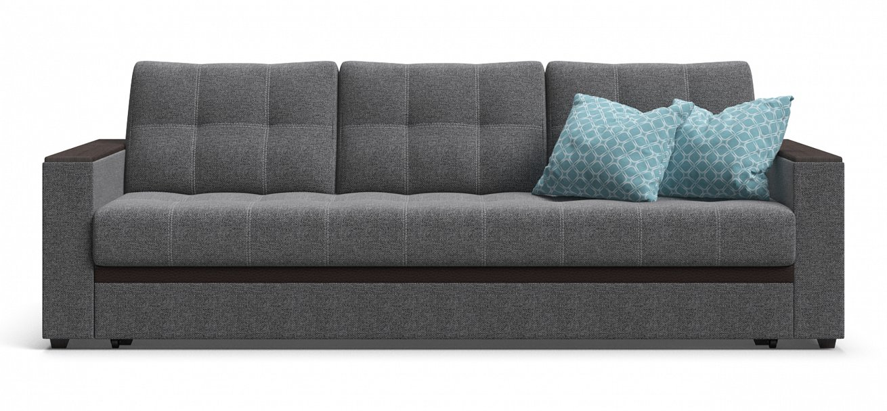

 Атланта Люкс рогожка Malmo серый Описание товара Стильная и элегантная модель дивана Атланта просто создана стать любимым местом для отдыха в Вашей гостиной.
Оптимальный для ежедневного использования механизм трансформации Еврокнижка, за считанные секунды, без малейших усилий поможет превратить диван в полноценную кровать с высоким и ровным спальным местом. Диван имеет удобные подлокотники из МДФ, которые можно использовать в качестве столика.
Элегантная прострочка на посадочной части украшает внешний вид дивана и дает возможность сохранить обивку от растяжения. 35 999 рубХарактеристики товара: